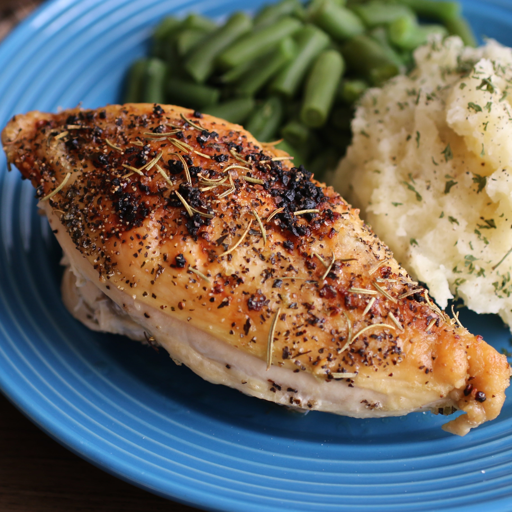
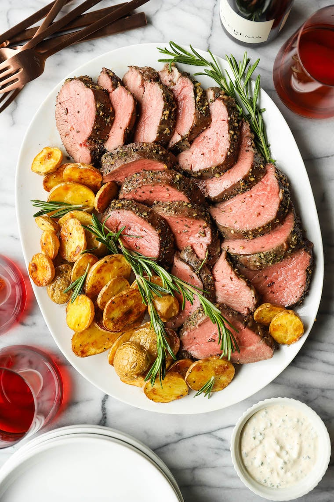
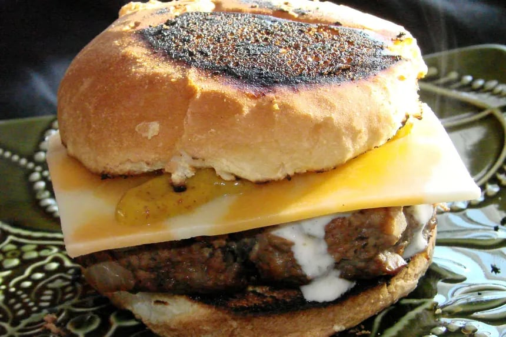
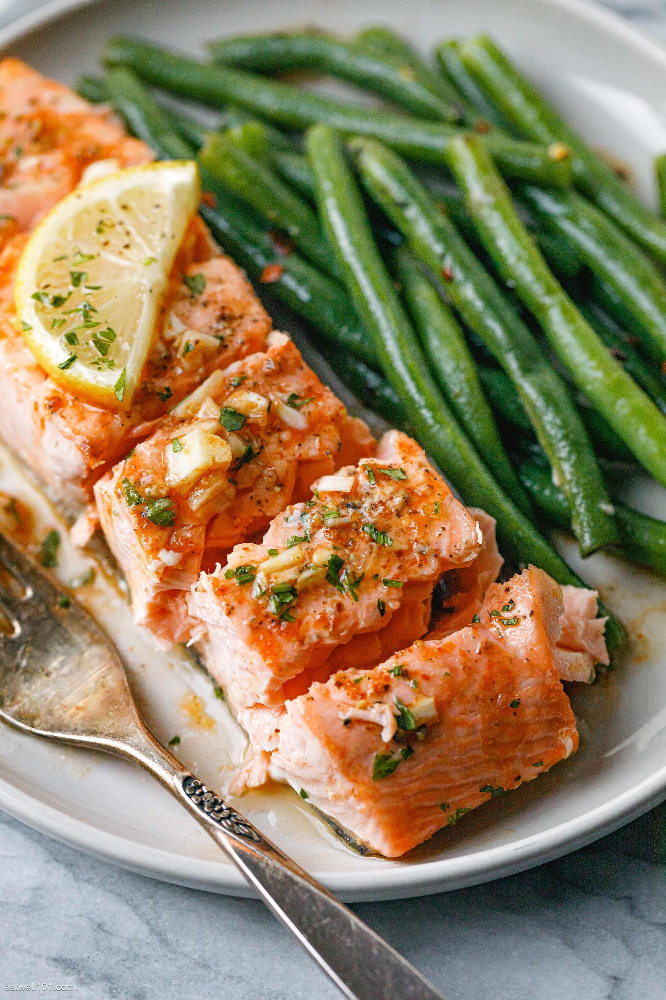
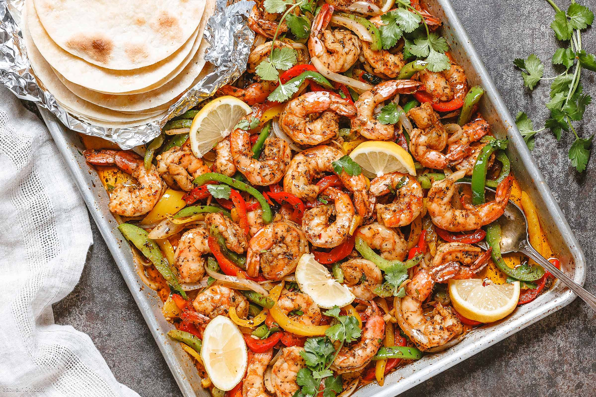
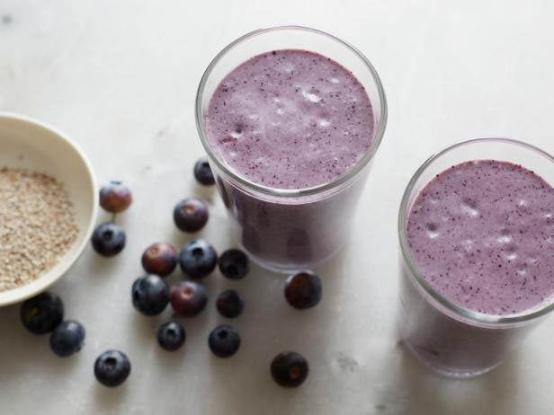
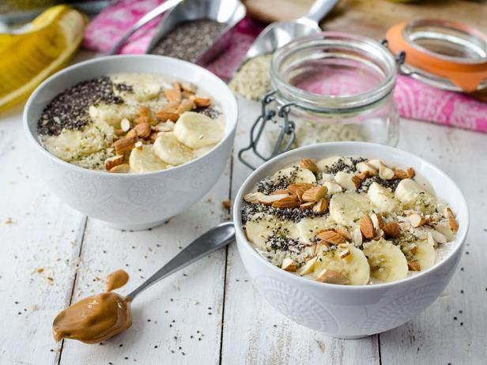

Food Menu

Baked Split Chicken Breast
Nutrions facts
- 615-calories
- 55-grams of protein
- 1g-carbs
- 42g-grams of fat
Ingredients
- 2 large bone-in chicken breast halves with skin
- ¼ cup extra-virgin olive oil
- ½ teaspoon garlic, minced
- ½ teaspoon coarse sea salt
- ½ teaspoon cracked black pepper
- ¼ teaspoon dried rosemary
- ¼ teaspoon dried basil

roasted beef tenderloin
Nutrions facts
- 845g-calories
- -grams of protein
- -carbs
- -grams of fat
Ingredients

low fat beef and mushroom burgers
Nutrions facts
- -calories
- -grams of protein
- -carbs
- -grams of fat
Ingredients
- 1 small onion, chopped
- 2 cups small cup mushrooms
- 450g lean minced beef
- 1 cup fresh wholemeal breadcrumbs
- 1 teaspoon dried mixed herbs
- 1 tablespoon tomato paste
- flour, for shaping salt and pepper

garlic butter baked salmon
Nutrions facts
- -calories
- -grams of protein
- -carbs
- -grams of fat
Ingredients
- 3 (6 oz) skinless salmon fillets
- 2 tablespoons vegetable broth or chicken broth
- 1 1/2 tablespoon fresh lemon juice, or to taste
- 1 tablespoon of your favorite hot sauce (we used Sriracha)
- 4 teaspoons minced garlic (4 cloves)
- Salt and fresh ground black pepper, to taste
- 3-4 tablespoons butter, diced into small cubes (or ghee)
- 2 tablespoons fresh chopped parsley
- 1 lb (450g) green beans, trimmed

sheet pan shrimp fajitas
Nutrions facts
- -calories
- -grams of protein
- -carbs
- -grams of fat
Ingredients
- 1 1/2 lbs shrimp, peeled and deveined
- 1/2 red bell pepper, cut into strips
- 1/2 green bell pepper, cut into strips
- 1/2 yellow bell pepper, cut into strips
- 1/2 1 medium yellow onion, sliced
- 1 teaspoon dried garlic
- 2 teaspoons ancho chili powder
- 1 1/2 teaspoons ground cumin
- 1 teaspoon ground paprika
- 1/2 teaspoon ground coriander
- 1/2 teaspoon salt and freshly ground black pepper
- 3 tablespoons olive oil
- 2 tablespoons fresh lime or lemon juice
- 3 tablespoons chopped cilantro

Blueberry and Chia Seed Smoothie
Nutrions facts
- 150-calories
- 5-grams of protein
- 20-carbs
- 5-grams of fat
Ingredients
- 2 tablespoons chia seeds
- 1 1/2 cups almond milk
- 1 cup blueberries
- 1 teaspoon pure vanilla extract
- 1 heaping tablespoon coconut butter or coconut oil
- Pinch cinnamon
- Raw honey


Mixed Berries and Banana Smoothie (and Smoothie Bowl)
Nutrions facts
- 200-calories
- 10-grams of protein
- 20-carbs
- 3-grams of fat
Ingredients
- 1 cup frozen mixed berries
- 3/4 cup orange juice
- 1/4 cup low-fat vanilla yogurt
- 1 frozen ripe banana
- 1 teaspoon honey, optional
- 1 teaspoon chia seeds
- 1/4 cup fresh blueberries
- 1/4 cup fresh raspberries
- 2 dollops low-fat vanilla yogurt
- 2 to 3 tablespoons granola
smoothie
Toppings for a Smoothie Bowl
Oatmeal Cookie Smoothie
Nutrions facts
- 250-calories
- 10-grams of protein
- 30-carbs
- 5-grams of fat
Ingredients
- 3/4 cup rolled oats
- 1/4 cup raisins
- 1/4 teaspoon pumpkin pie spice
- 1 cup whole milk, plus more if needed
- 1/2 cup full-fat vanilla yogurt
- 1 tablespoon dark brown sugar